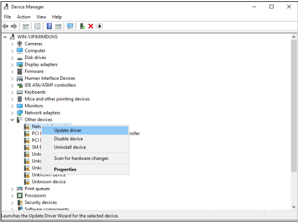
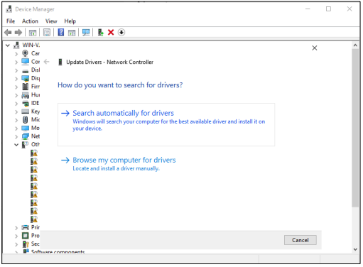
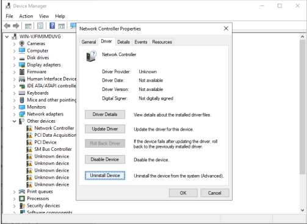
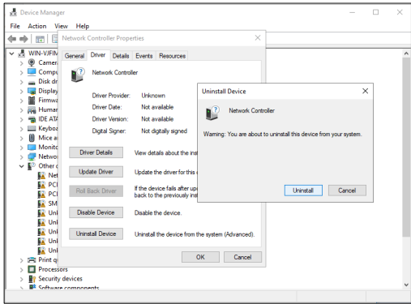

1. Right-click Start. Click Device Manager
2. Identify Devices Needing Drivers
3. for Automatic Installation:
Right-click the device → Update Driver.

Choose Search automatically for drivers.

Windows checks Windows Update or preloaded drivers.
For Manual Installation:
4. To Configure the Driver Right-click the device. Click Properties. Configure settings under tabs: Driver (update, roll back, disable), Power Management, Advanced (device-specific settings)
5. Restart the Server (if needed)
1. Right-click Start. Select Device Manager
2. Locate the Device.
3. Open Device Properties. Right-click the device.

Click Properties
4. In the Properties window → click Driver tab. Click Uninstall

5. Restart the Server
import pandas as pd
data = {'Region': ['North', 'South', 'East', 'West', 'North'],
'Product': ['A', 'B', 'A', 'B', 'A'],
'Sales': [100, 200, 150, 300, 250]}
df = pd.DataFrame(data)
print("Original Data:")
print(df)
# -------- SLICE --------
slice_data = df[df['Product'] == 'A']
print(slice_data)
# -------- DICE --------
dice_data = df[(df['Product'] == 'A') & (df['Region'] == 'North')]
print(dice_data)import pandas as pd
data = {'Year': [2022, 2022, 2023, 2023],
'Region': ['North', 'South', 'North', 'South'],
'Sales': [100, 200, 150, 300]}
df = pd.DataFrame(data)
print("Original Data:")
print(df)
# -------- ROLL-UP --------
rollup = df.groupby('Year')['Sales'].sum()
print(rollup)
# -------- DRILL-DOWN --------
drilldown = df.groupby(['Year', 'Region'])['Sales'].sum()
print(drilldown)